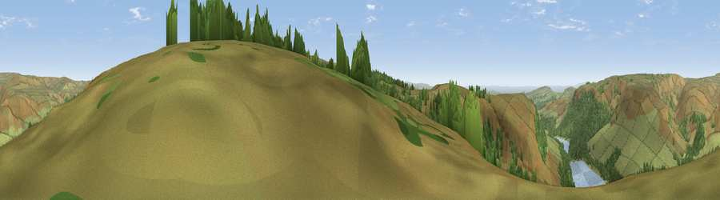

Viewpoint near Padfield
#10322 in England · top 14% of its area beats it · near PadfieldWhere it is
The exact computed spot (SK 07475 97725). Click the marker for map links.
The view, rendered

A 360° render of this exact spot computed from the terrain model, tree cover and land cover — summer colours, afternoon light, calibrated against photographs of famous viewpoints. Real trees, hedges and buildings will differ in detail.
The panorama
Grey silhouette: terrain skyline in each direction (720 bearings, Earth curvature and refraction included). Dashed green: skyline with trees (+15 m) and buildings (+8 m) as obstacles. Blue strip: how far the ground is visible on each bearing.
Where the view opens
Wedge length = distance to the farthest visible ground on that bearing (vegetation-aware). Rings at 10, 25 and 50 km.
What fills the view
69% grassland · 25% woodland · 5% water
Angular shares of the visible panorama (visual magnitude), not map area. Landscape diversity 0.34 (0–1 Shannon).
Key numbers
More beautiful places nearby
The staircase of upgrades: each row has a higher view potential than everything closer. Driving times are estimates from straight-line distance, calibrated against real road routing — check an actual route before setting out.
| Place | Direction | Drive | Score |
|---|---|---|---|
| Viewpoint near Padfield | W · 2 km | ~6 min | 65.1 |
| Viewpoint near Glossop | S · 3 km | ~7 min | 65.6 |
| Viewpoint near Glossop | SSE · 3 km | ~8 min | 67.8 |
| Viewpoint near Lane | NNE · 8 km | ~16 min | 68.5 |
| Viewpoint near Little Hayfield | S · 8 km | ~16 min | 70.0 |
| Wild Bank | W · 9 km | ~17 min | 76.2 |
| Viewpoint near Carrbrook | WNW · 9 km | ~17 min | 77.1 |
| Viewpoint near Edenfield | NW · 33 km | ~51 min | 77.5 |
53.47620, -1.88884 · source: screening · position refined by local search. Computed location — check access rights before visiting.